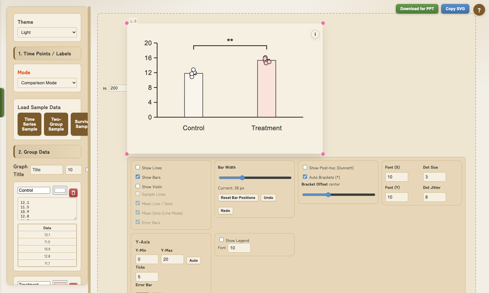
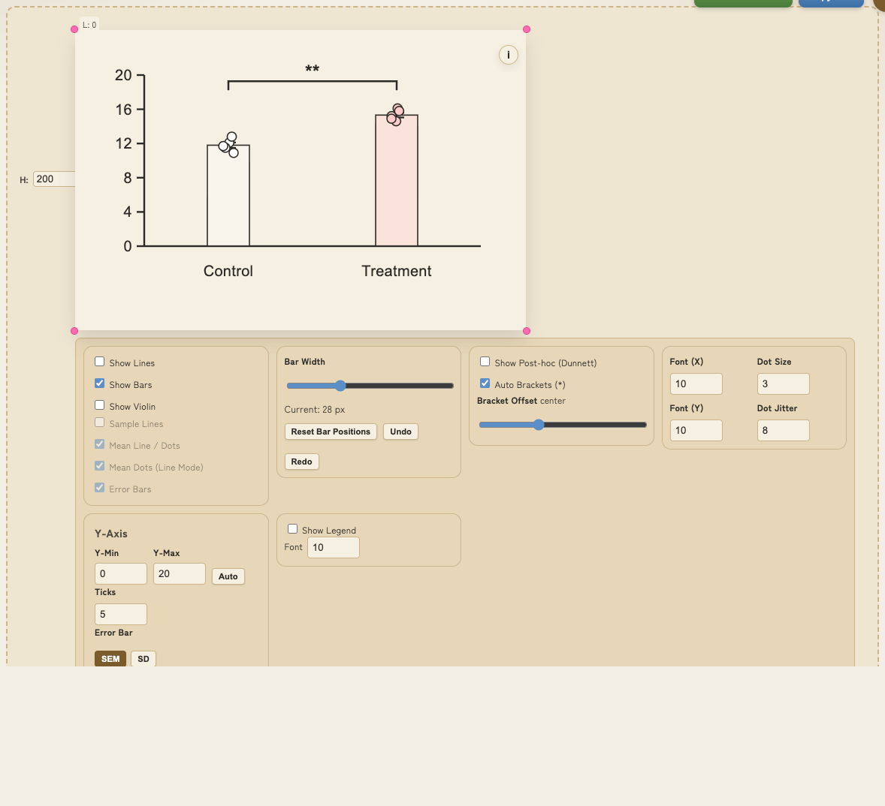
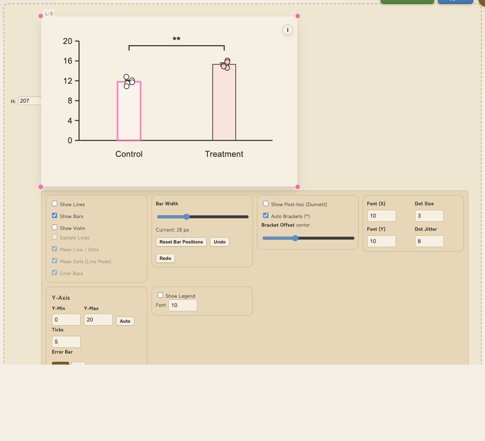
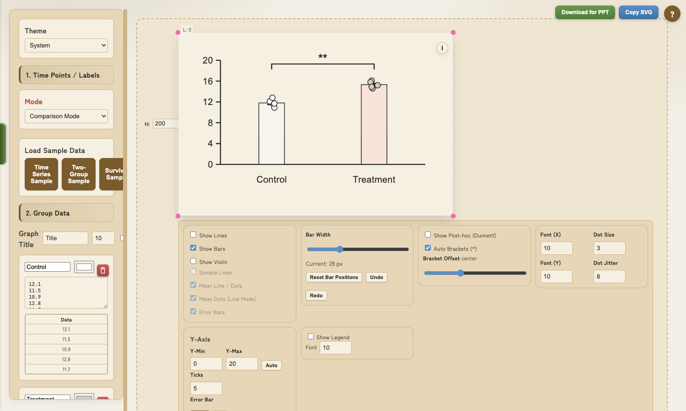

入力データはブラウザ内で処理され、グラフ作成に必要なデータ内容はサーバーへ送信しません。
※このページは Tailwind CDN を読み込み、アクセス解析が動作する場合があります。
ダウンロード・アカウント登録不要

すべての処理はブラウザ内で完結。
入力データやファイル内容はサーバーへ送信しません。
※ページ表示や解析のための通信（CDN / アクセス解析）は発生します。
Welch's t-test, ANOVA, Tukey, Dunnett など主要な検定を自動計算。
p値と有意性が即座に表示されます。
※最終確認は GraphPad Prism / R 等で行うことを推奨
SVG形式で出力するため、
PowerPoint / Illustrator で自由に編集可能。
拡大しても劣化しないベクター画像です。
3つのモードと Explorer により、多様な研究データに対応。
ドラッグと数値入力で直感的にレイアウト調整が可能です。
CSV / TSV / Excel をドラッグ&ドロップで読み込み。フォルダツリー、プレビュー、列選択、グループへのステージまでGUIで完結。
ファイル内容はブラウザ内で処理され、外部送信しません。
グラフ右上の「i」アイコンから、ドラッグ可能な要素と操作手順を確認できます。
論文・発表に最適な見た目に仕上げるための豊富なカスタマイズ機能


GIFは実UIの操作を記録したものです。表示内容はサンプルデータです。
タイトル・軸ラベル・凡例に加えて、バーとサンプル名もドラッグで移動可能。
サンプル名は上下移動、バーは左右移動に対応。右上の「i」アイコンで対象を確認できます。
Y軸の最大値・最小値、目盛り間隔を数値で指定。
W/H入力やコーナーハンドルで縮尺（描画領域）も調整できます。
ドットサイズ、エラーバー、線の太さ、バー幅、グループ間距離など。
バー位置はドラッグで調整し、必要ならリセット/Undo/Redoできます。
調整した設定はJSONファイルとして保存可能。
同じ設定を別のデータにも適用でき、論文内で統一感のあるグラフを作成できます。
ローカルのCSV/TSV/Excelを読み込み、プレビューからグループへステージできます。

ドラッグ&ドロップ、または「select from local」から読み込み可能です。
プレビュー上でドラッグ選択し、列幅や小数表示も調整できます。
選択範囲をグループへ送信し、メイン画面へ反映できます。ファイル内容はブラウザ内で処理されます。
Excel/スプレッドシートからコピー&ペースト、またはサンプルデータをロード
ドラッグでバー/ラベル位置を調整、縮尺やカラー/サイズを変更
ベクター画像としてダウンロード。PowerPoint等で編集可能